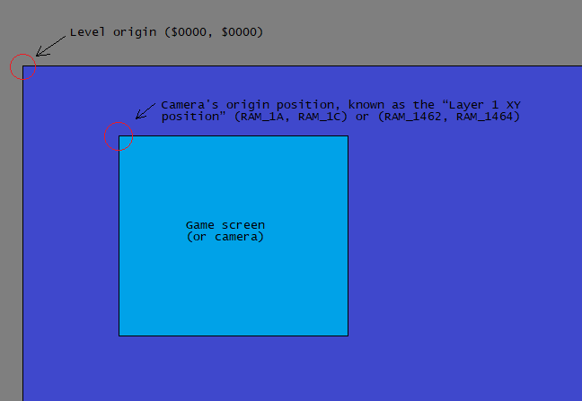
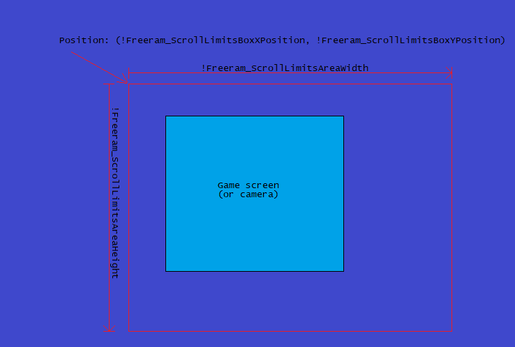
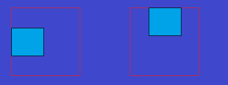
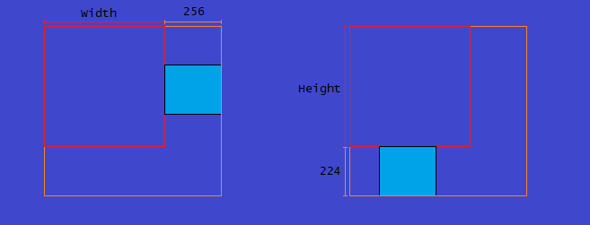
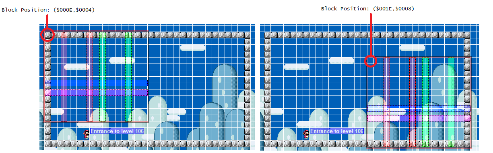
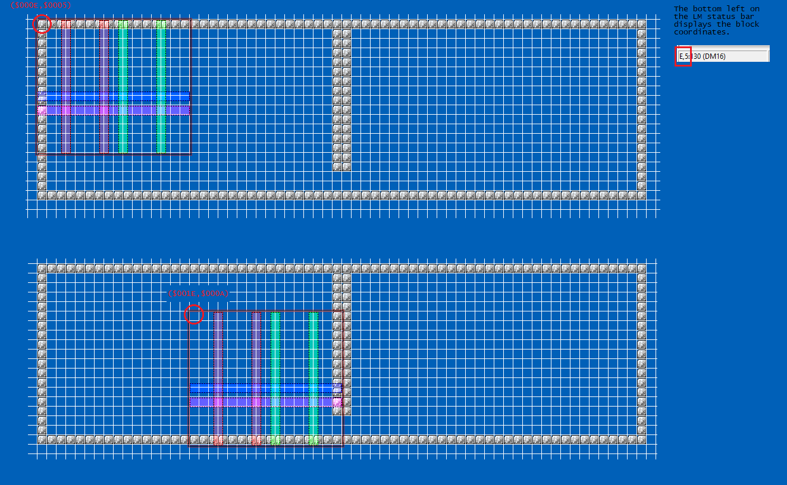
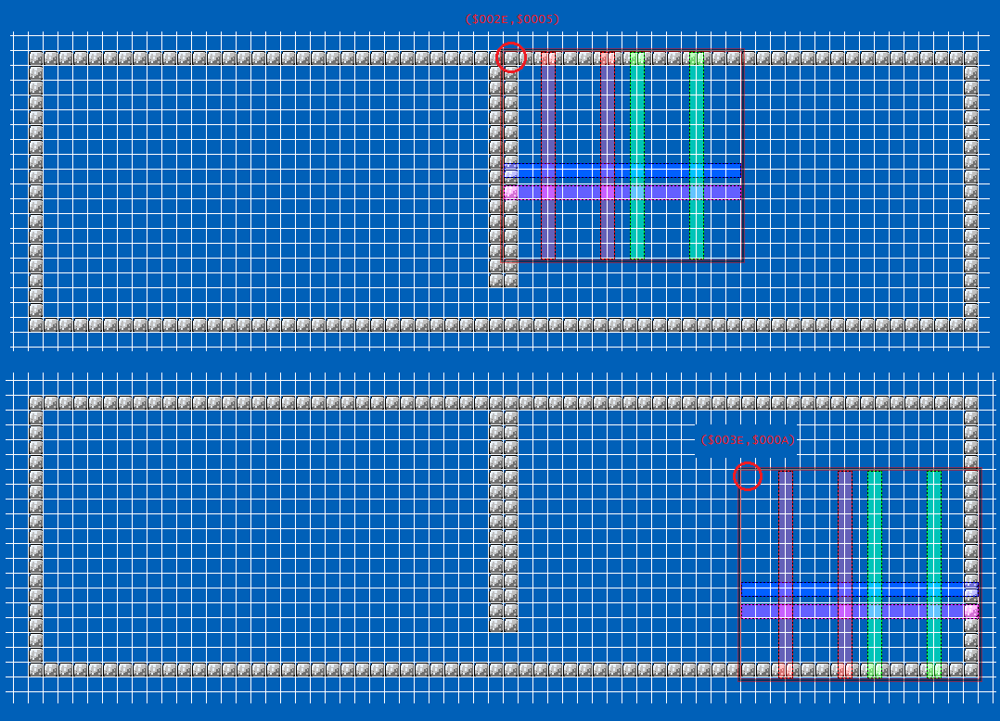

Custom scroll limits
Introduction
This ASM package enables you to set custom boundaries of your level.
Also comes with a feature to have a Megaman/Celeste/Zelda-styled scroll areas where the camera will not cross between areas unless you go to that area.
Normally, you would think this is redundant because there exist other codes that stops the screen scrolling at a certain XY position, say one
found in the ASM library, however this ASM package offers more flexibility, and that
you can have “multiple scroll stops” without duplicate code
Table of contents
^Note before use
- The patch (ScrollLimitsPatch.asm) obviously will hijack scrolling related codes ($00F73C (horizontal level limits for left and right borders), $00F893
(horizontal and vertical limits for top and bottom borders)). If you wish to have other scrolling-related patches such as my “Center scroll” patch
or Vertical Camera Panning. In these cases, you'll need to merge the ASM files (more specifically, not to use SMW's default scroll limits but
use this custom scroll limits patch's RAM that controls the limits). This patch itself just modifies the limits, nothing more.
- SMW's horizontal scrolling is instant-- that it simply takes Mario's X position, take various calculations handled at $00F73C (which also handles the left and right limits), unlike vertical scrolling,
which that is handled at $00F88F, horizontal scrolling instantly sets the screen X position within the level rather than gradually incrementing/decrementing it. So these situations should be avoided that causes
layer 1 graphic glitches due to not giving it frames to load the columns of 16x16 tiles:
- Teleporting the player, as in taking the player's X position ($94), add or subtract by some large number (greater than ±$0010) that results the player being “teleported” in long distances.
- Have horizontal scrolling disabled ($1411 set to $00), then enable horizontal scrolling while the player is outside the static camera region. This will cause the camera to jump to be centered
with the player
- RAM address $13F2 is no longer cleared by $00F8A7.
- Anytime you want to trigger a flip-screen effect, I highly recommend setting $1411 and/or $1412 to zero (disable horizontal and/or vertical scrolling). Even though uberasm tool already
STZs it, if you don't disable horizontal and/or scrolling and your code is executed, then runs $00F70D or $00F75C, before executing uberasm tool's gamemode 14, screen-jumping (screen changes position instantly
and result graphical glitches) can still occur.
- Setting $1411 and $1412 only disables the default scrolling (the behavior of the screen to follow the player) as well as the scrolling limit not to go outside the level. Autoscroll generators have done this
so that the player cannot move the screen as they wish.
- When the screen is at the bottommost of the level (with LM's “Allow viewing full bottom row of tiles” being checked in the “Change Properties in Header” dialog.), the screen's Y position is showing 1 pixel row
beyond the bottom of the level (for example: with the level dimension setting (horizontal level mode) set to 08: Level Height=02A tiles, Max H-Screens=15), and have the camera position at Y=$01C0, you can see
last row of pixels at the bottom of the screen showing the top pixels of garbage/unloaded blocks. It seems that the screen display seems to be 1 pixel lower than the values presented in the SNES register $210E/RAM $1C/RAM $1464. The easy fix
is to simply move the custom border 1 pixel up (in this example, the Y position of the screen should be $01BF).
^What you need
- Sprite scroll fix: SMW's system to check which scroll direction sprites should be able to spawn ($55/$56) is flawed, that it
check which side the player is located relative to the “static camera region” ($142A), rather than the actual scrolling of the screen. This bug only happens if you “manually” scroll the screen,
common method is by setting $1411 to zero and incrementing/decrementing $1462, can cause sprites to spawn on the side of the screen that the screen is moving away from rather than towards, and failing to spawn.
- Disable Screen Barrier via RAM: Useful if you want such triggers that would trigger the flip-screen effect by touching the very edges of the screen, and also
prevent potential deaths caused by being at those edges of the screen.
-
ASM knowledge, if you're using other scrolling-related patches (like my previously mentioned “center scroll” patch), then there is a chance you'll have to modify them (and/or merge them if the hijacks overlap), especially if those patches have code that sets the scrolling limit itself:
Here is a hint: XY position top and left positions are always X/Y = $0000. The right and bottom limits are:
- Horizontal levels (and any dimension settings): LastScreenXPosition = (ValueIn_RAM_5E - 1) * 256. The bottom position is stored in scratch RAM $04 during around $00F810. Unlike $13D7, LM have a feature with an option to enable the screen
to scroll down to show the last row of blocks at the very bottom of the level, on “Change Properties in Header”.
- Vertical levels: The last screen on the horizontal axis is always at X = $0100 (since vertical level settings are always 2 screens wide). The bottom position is at LastScreenYPosition = (ValueIn_RAM_5F - 1) * 256.
Recommended
^Interesting facts
- When horizontal and/or vertical scrolling are disabled ($1411 and/or $1412), the boundaries (left or right for horizontal, top and bottom for vertical) are no longer running (it will not set the XY coordinate of
the screen to place it back in bounds).
^Installation
- Defines
- Open SMW-Scroll-limits/ScrollLimitsDefines/Defines.asm, and make any necessary changes on it. There is a very high chance you'll need to do this if you have other ASM resources that uses freeram as well, as they
tend to “overlap” with the default RAMs the patch provided here uses. And yes, even the required patches listed on this document needs to have its freeram defines changed to avoid issues.
- Patches
- Before you patch ScrollLimitsPatch.asm or other patches related to scrolling, open ScrollLimitsPatch.asm AND the other patches (specifically if they hijack scrolling-related code) and see the
org $xxxxxx would conflict. If they do, you'll need to merge them and potentially need to learn a little bit of ASM.
ScrollLimitsPatch.asm just modifies the behavior how scrolling limits work. If you say, install my “Center Scroll” patch, for example, edit the center scroll patch's scroll limits so that it first checks
the RAM defined by !Freeram_ScrollLimitsFlag, and if it is nonzero, then it should do something similar how the patch provided here works (which means you'll need to learn about ASM).
- Uberasm tool (installs the flip screen effect)
- In SMW-Scroll-limits/UberasmTool/, place the files in their appropriate spots in uberasm tool's files. They are conveniently named.
- Run the tool
^How to use them in a level
This is pretty easy, we need these types of information for its effects to apply:
- Enabling the borders by setting !Freeram_ScrollLimitsFlag to $01. Note that values $02+ are reserved for the flip-screen effect not handled by the patch itself.
- X and Y position (in pixels), which are RAM used under the defines
!Freeram_ScrollLimitsBoxXPosition and !Freeram_ScrollLimitsBoxYPosition.
- Width and height (in pixels), which are RAM used in the defines !Freeram_ScrollLimitsAreaWidth and !Freeram_ScrollLimitsAreaHeight.
You can now set your own borders. Keep these information in mind:
- Grey means outside the level boundaries.
- blue means inside the level boundaries.
- cyan means the game screen.
- red means the boundaries specified by the RAM the patch uses.
- orange means the actual scrolling stopping position for the bottom and right borders, relation to the screen's bottom and right borders.
Scroll stopping positions info
- Ram address defined in !Freeram_ScrollLimitsBoxXPosition and !Freeram_ScrollLimitsBoxYPosition represent the location of this
“area”, meaning all 4 “borders” will move when these XY position gets changed.
Now keep in mind, almost everything have their origin position at the top-left of some kind of box, the screen is no exception:

- Soo, how the right and bottom borders are placed then? Well, it takes the X/Y position, add by the value by Width/Height, in pixels (stored in
RAM defined as !Freeram_ScrollLimitsAreaWidth and !Freeram_ScrollLimitsAreaHeight) and that will be
the right and bottom borders position:

- The top and left is pretty obvious on where the screen will stop at:

However, the bottom and right borders, they take the screen's origin position to limit instead of the right and bottom edge of the screen:

Setting the borders up
Lunar Magic thankfully have this feature of “Game view screen” (found in the menubar on view). Have that, along with the 16x16 block
coordinate display at the bottom-left corner (to convert block-coordinates to pixel, simply multiply them by 16 ($10) (example:
($0002,$0003) in block coordinates is ($0020,$0030) in pixel-coordinates)). Also note that LM versions before 3.03 (2019-04-01) displays the coordinates in decimal,
while on and after 3.03 displays them in hex.
-
Obtain the X/Y positions by placing the screen display on LM at the top-leftmost area you want to place your limits at (make sure it is
aligned with block grid). Now hover your mouse on the top-leftmost block that is at the top-left of the screen. We now have the X and Y
position of the area. Remember that LM shows the coordinates in units of 16x16 blocks, not pixels, so to convert to pixel you multiply these by 16.
-
Do the exact same thing, but on the bottom-rightmost. Obtain the coordinate of the block that is on the top-leftmost of that screen.
-
After obtaining those stuff, we can calculate to find the widths and heights:
WidthOrHeights = (LM_CoordinateOfTopLeft_BottomOrRightmost_Screen-LM_CoordinateOfTopLeft_TopOrLeftmost_Screen)*16
Where:
-
LM_CoordinateOfTopLeft_TopOrLeftmost_Screen: means the top left of the screen at the leftmost position possible, in block-coordinates (not pixel), either X or Y position
-
LM_CoordinateOfTopLeft_BottomOrRightmost_Screen: means the top-left of the screen at the rightmost position possible, in block-coordinates (not pixel), either X or Y position
Thankfully assemblers allow putting a formula (such as Asar), from my testing, make sure they do not have spaces.
-
Have an ASM code using this template. This assumes you are using uberasm tool's level under load/init/main label:
incsrc "../ScrollLimitsDefines/Defines.asm"
;^this may be different depending on where you place the defines folder. It is a
;file path to obtain the defines so that the assembler knows what these defines are.
;These defines are separate from the defines file since this apply to a specific level:
!PerLevelScrollLimitXPosition = ($000E)*16
!PerLevelScrollLimitYPosition = ($0004)*16
!PerLevelBorderWidth = ($001E-$000E)*16
!PerLevelBorderHeight = ($0008-$0004)*16
load:
LDA #$01 ;\Enable borders
STA !Freeram_ScrollLimitsFlag ;/
REP #$20
LDA #!PerLevelScrollLimitXPosition ;\Setup borders
STA !Freeram_ScrollLimitsBoxXPosition ;|
LDA #!PerLevelScrollLimitYPosition ;|
STA !Freeram_ScrollLimitsBoxYPosition ;|
LDA #!PerLevelBorderWidth ;|
STA !Freeram_ScrollLimitsAreaWidth ;|
LDA #!PerLevelBorderHeight ;|
STA !Freeram_ScrollLimitsAreaHeight ;/
SEP #$20
JSL LibraryScrollLimits_ForceScreenWithinLimits ;>Call this AFTER setting up the borders.
RTL |
Do note that this sets the screen position, when the player attempts to move the screen, so screen jumping can occur and display glitched (unloaded) layer 1 and 2 graphics.
Use this code during level loading is recommended.
Also be careful that some freeram addresses may clear during level loading, I'm not sure if uberasm tool's load happens after or before clearing RAM, the default RAMs here were tested and
does not to it seems safe. If you are unsure, check out the RAM map.
Furthermore, if you have borders that can turn on/off, both ways can cause the screen to jump within bounds or jump to position so that the static camera region is on the player.
To avoid screen jumping, I recommend setting !Freeram_ScrollLimitsFlag to $02 (screen gradually scrolls to be within bounds closest to the player) or $03 (same as $02
but also temporally freezes the game). Don't forget to set $1411 and $1412 to zero just in case.
Here is an example, using the sample code previously mentioned:

Now note: If you have layer 2 suddenly jumping when the level load has finished, see this information
^How to have a flip-screen effect in a level
This is the same as above, but we are dealing with multiple borders instead of one. The code checks Mario's position every frame if he's in one of these
zones, and if it detects a change between zones, perform a scrolling to the zone he's newly in (If Mario is in neither, treat as if the player didn't switch zones).
- You want to have a code and table like this (and feel free to use it as a template):
load:
LDA #$02 ;>Nonzero value
STA !Freeram_DisableBarrier ;>Disable barrier (without it, you cannot trigger scrolling effect on left/right side of screen)
STA !Freeram_ScrollLimitsFlag ;>Enable scroll limits.
JSL WriteTableAddress
STZ $1411|!addr ;\Just in case
STZ $1412|!addr ;/
JSL LibraryScrollLimits_IdentifyWhichBorder ;>What border the player is in
LDA #$03 : STA $0C ;>Transition mode, use only these values: $02 = Transition without freeze, $03 = transition with freeze.
JSL LibraryScrollLimits_SetScrollBorder ;>Set border attributes
JSL LibraryScrollLimits_ForceScreenWithinIdentifiedLimits ;>Make it so that the screen is within the zone the player is in.
;[Insert code here that would adjust layer 2 from layer 1 AFTER layer 1 is placed within borders.]
RTL
main:
JSL WriteTableAddress
JSL LibraryScrollLimits_IdentifyWhichBorder ;>Identify what border the player is in (will set !Freeram_FlipScreenAreaIdentifier to what zone the player is in).
LDA #$03 : STA $0C ;>Transition mode, use only these values: $02 = Transition without freeze, $03 = transition with freeze.
JSL LibraryScrollLimits_SetScrollBorder ;>Apply the changes of the border.
RTL
WriteTableAddress:
LDA.b #ScreenBoundsXPositions : STA $00 ;\Border attributes, from the table
LDA.b #ScreenBoundsXPositions>>8 : STA $01 ;|
LDA.b #ScreenBoundsXPositions>>16 : STA $02 ;|
LDA.b #ScreenBoundsYPositions : STA $03 ;|
LDA.b #ScreenBoundsYPositions>>8 : STA $04 ;|
LDA.b #ScreenBoundsYPositions>>16 : STA $05 ;|
LDA.b #ScreenBoundsWidths : STA $06 ;|
LDA.b #ScreenBoundsWidths>>8 : STA $07 ;|
LDA.b #ScreenBoundsWidths>>16 : STA $08 ;|
LDA.b #ScreenBoundsHeights : STA $09 ;|
LDA.b #ScreenBoundsHeights>>8 : STA $0A ;|
LDA.b #ScreenBoundsHeights>>16 : STA $0B ;/
LDA.b #(ScreenBoundsYPositions-ScreenBoundsXPositions)-2 : STA $0C : STZ $0D ;>Size of the table, minus 2
RTL
;Scroll limit box attributes, each index is each screen area.
;Make sure the number of values all matches!
;
;Note: If the screen can be at the bottommost of the level and with “Allow viewing full bottom row of tiles”
;checked, it can show a row of pixels at the bottom of the screen of garbage/unloaded tiles. Therefore to avoid this, use
;these formulas instead (it is the same, but after all calculations, it is subtracted by 1):
;If the height is set to 0 (no room for moving the screen vertically)
; YPos = (LM_CoordinateOfTopLeft_TopOrLeftmost_Screen*16)-1
;If the height isn't 0:
; Width = ((LM_CoordinateOfTopLeft_BottomOrRightmost_Screen-LM_CoordinateOfTopLeft_TopOrLeftmost_Screen)*16)-1
;
;
;Easy formula to calculate where the screen should be at:
; LM_CoordinateOfTopLeft_TopOrLeftmost_Screen*16
; Where:
; -LM_CoordinateOfTopLeft_TopOrLeftmost_Screen means the top left of the screen at the leftmost
; position possible, in block-coordinates (not pixel), either X or Y position
;Top-left positions
ScreenBoundsXPositions:
dw $0000*16 ;>$00
dw $0018*16 ;>$01
dw $0028*16 ;>$02
dw $0028*16 ;>$03
dw $003C*16 ;>$04
dw $004C*16 ;>$05
dw $005C*16 ;>$06
dw $005C*16 ;>$07
dw $007C*16 ;>$08
dw $009D*16 ;>$09
ScreenBoundsYPositions:
dw $0000*16 ;>$00
dw $0015*16 ;>$01
dw $000B*16 ;>$02
dw ($001C*16)-1 ;>$03
dw $0000*16 ;>$04
dw $000C*16 ;>$05
dw $000C*16 ;>$06
dw $001A*16 ;>$07
dw $0000*16 ;>$08
dw $0000*16 ;>$09
;Widths and heights. Easy formula if you want positions for both the top-lefts and bottom-rights.
; WidthOrHeights = (LM_CoordinateOfTopLeft_BottomOrRightmost_Screen-LM_CoordinateOfTopLeft_TopOrLeftmost_Screen)*16
; Where:
; -LM_CoordinateOfTopLeft_TopOrLeftmost_Screen: means the top left of the screen at the leftmost
; position possible, in block-coordinates (not pixel), either X or Y position
; -LM_CoordinateOfTopLeft_BottomOrRightmost_Screen: means the top-left of the screen at the rightmost
; position possible, in block-coordinates (not pixel), either X or Y position
ScreenBoundsWidths:
dw ($0008-$0000)*16 ;>$00
dw ($0018-$0018)*16 ;>$01
dw ($0028-$0028)*16 ;>$02
dw ($0046-$0028)*16 ;>$03
dw ($003C-$003C)*16 ;>$04
dw ($004C-$004C)*16 ;>$05
dw ($006C-$005C)*16 ;>$06
dw ($0063-$005C)*16 ;>$07
dw ($008D-$007C)*16 ;>$08
dw ($00AD-$009D)*16 ;>$09
ScreenBoundsHeights:
dw ($000C-$0000)*16 ;>$00
dw ($0015-$0015)*16 ;>$01
dw ($000B-$000B)*16 ;>$02
dw ($001C-$001C)*16 ;>$03
dw ($000E-$0000)*16 ;>$04
dw ($000C-$000C)*16 ;>$05
dw ($000C-$000C)*16 ;>$06
dw ($001A-$001A)*16 ;>$07
dw ($001B-$0000)*16 ;>$08
dw ($001B-$0000)*16 ;>$09 |
The tables, labeled ScreenBoundsXPositions, ScreenBoundsYPositions, ScreenBoundsWidths, and ScreenBoundsHeights, is what we need to focus on.
Keep in mind that each same nth item in each table are associated with each other, meaning that the first item in the tables are used together for zone 0 (index 0), second item in tables for zone 1 (index 1), and so on,
they do not use other items within them (like zone 0 uses first item in ScreenBoundsXPositions, second item in ScreenBoundsYPositions, it doesn't work like that)
- It is pretty much the same, but we are dealing with multiple borders. Get their positions accordingly, here is the image using the example table and code previously mentioned:

-
With the coordinates in hand we have, in the example:
- Leftmost X position: $000E, rightmost: $001E
- Topmost Y position: $0005, bottommost: $000A
zone 0's border attributes:
;Top-left positions
ScreenBoundsXPositions:
dw $000E*16 ;>$00
ScreenBoundsYPositions:
dw $0005*16 ;>$00 |
To get the widths and heights, the formula for that is (Block_BottomRightmost-Block_TopLeftmost)*16, so it should be:
ScreenBoundsWidths:
dw ($001E-$000E)*16 ;>$00
ScreenBoundsHeights:
dw ($000A-$0005)*16 ;>$00
|
zone 1's attribute added:

And the tables should be:
;Top-left positions
ScreenBoundsXPositions:
dw $000E*16 ;>$00
dw $002E*16 ;>$01
ScreenBoundsYPositions:
dw $0005*16 ;>$00
dw $0005*16 ;>$01 |
ScreenBoundsWidths:
dw ($001E-$000E)*16 ;>$00
dw ($003E-$002E)*16 ;>$01
ScreenBoundsHeights:
dw ($000A-$0005)*16 ;>$00
dw ($000A-$0005)*16 ;>$01 |
- And now you are done.
^Note using in a level
- If the areas overlap, and the player is in that area, whatever last on the table list the player is in will take precedence and overrides any borders before it on the table, as the routine, like most codes uses a
negative check loop (a loop that an index starts with a specified number besides 0, and in that loop, the index decrements
until it goes negative (X/Y = $FF, for example) and exits).
-
Layer 2 XY positioning may suddenly jump on the first frame after the level was loaded, if the player spawns at a position the screen would be outside the custom scroll borders. This is due to the stuff being executed in this order:
-
$00f79d: LM's hijack to use its own layer 2 scrolling code, this is executed once during a black screen (not every frame):
;Note about what these RAMs are:
$1413 [1 byte]: Horizontal BG scrolling rate
$1414 [1 byte]: Vertical BG scrolling rate
$1417 [2 bytes]: Layer 2 Y offset, after processing its scrolling rate.
$1A or $1462 [2 bytes]: Layer 1 X pos (or “screen position” within the level)
$1C or $1464 [2 bytes]: Layer 1 Y pos (or “screen position” within the level)
$1E or $1466 [2 bytes]: Layer 2 X pos
$20 or $1468 [2 bytes]: Layer 2 Y pos |
;Note that the address may be different from yours, since they occupy freespace.
;This is tested using LM v3.21.
;00f79d jml $108350 ;>SMW's vanilla address
;[...]
;108350 lda $1413 ;\$1413 and $1414: determine what scrolling rate for horizontal and vertical
;108353 asl a ;|\Both $1413 and $1414 are doubled since the values to jump are 16-bit addresses.
;108354 tax ;||
;108355 xba ;||
;108356 tay ;//
;108357 lda $1a ;>Layer 1 X pos
;108359 jmp ($837a,x) ;>This jumps to one of the LSR below, which determines the rate of horizontal scrolling
;10835C lsr a ;\Take layer 1 X pos, divide by 2**n, and store that number into layer 2 X pos
;10835D lsr a ;|Layer2XPos = Layer1XPos / (2**n)
;10835E lsr a ;|
;10835F lsr a ;|
;108360 lsr a ;|
;108361 lsr a ;|
;108362 sta $1e ;/
;108364 tyx ;\Do the same thing but Y position, this time, with an offset in $1417.
;108365 lda $1c ;|Layer2YPos = Layer1YPos / (2**n) + ValueInRAM_1417
;108367 jmp ($838a,x) ;|
;10836a lsr a ;|
;10836b lsr a ;|
;10836c lsr a ;|
;10836d lsr a ;|
;10836e lsr a ;|
;10836f lsr a ;|
;108370 clc ;|
;108371 adc $1417 ;|
;108374 sta $20 ;/
;108376 jml $00f7c2 ;>Return to SMW code
;;[...]
;10837a:
;;These contain the word (16-bit) address to jump to one of the LSRs.
;dw $8364 ;>$10837a (Index $00); when $1413 == $00 (none)
;dw $8362 ;>$10837c (Index $02); when $1413 == $01 (constant)
;dw $8361 ;>$10837e (Index $04); when $1413 == $02 (variable)
;;[...]
;10838a:
;;These contain the word (16-bit) address to jump to one of the LSRs, same as above but for $1414.
;dw $8376 ;>10838a (Index $00); when $1414 == $00 (none)
;dw $8370 ;>10838c (Index $02); when $1414 == $01 (constant)
;dw $836F ;>10838e (Index $04); when $1414 == $02 (variable)
;dw $836B ;>108390 (Index $06); when $1414 == $03 (slow)
;dw $836E ;>108392 (Index $08); when $1414 == $04 (slow 2)
;dw $836D ;>108394 (Index $0A); when $1414 == $05 (slow 3?)
;dw $836C ;>108396 (Index $0C); when $1414 == $06 (slow 4?)
;dw $836A ;>108398 (Index $0E); when $1414 == $07 (slow 5?) |
- Uberasm tool's level load code.
- A few frames later, executes SMW's scrolling code routine (both Mario moving the screen as well as the scrolling limits), such as $00F893.
- A frame afterwards, $00f79d is executed again, realized layer 1 XY pos has been changed, causing the layer 2 background to jump.
Therefore, LM will set the layer 2 XY pos, using layer 1 XY pos that was BEFORE it was moved to be within bounds, a frame afterwards, layer 1 XY pos got updated (now in-bounds) and
the background XY pos update to use that new layer 1 position.
One way to fix this is by after Layer 2 has been shifted, using a debugger (bsnes plus), set a breakpoint at address $00f79d under “execute”, and use the step
function to see how the code is executed to calculate the position of layer 2. Try to mimic that using uberasm tool under the level under load. While the X position never
changes based on the player's level entrance, the Y position may vary using $1417, so keep that in mind.
- If you have set the custom borders to extend outside the level boundaries, don't worry, both the main patch ScrollLimitsPatch.asm and uberasm tool code library/LibraryScrollLimits.asm have
a failsafe measure to prevent the screen and the scrolling destination position from leaving the level, regardless the RAM defined in !Freeram_ScrollLimitsFlag being nonzero or not.